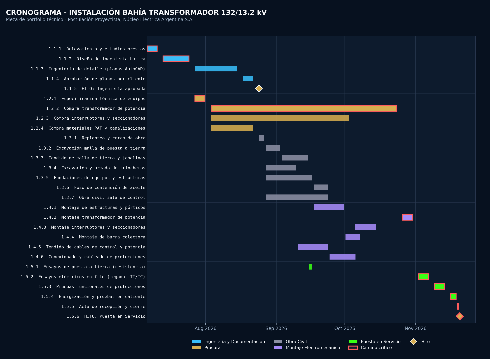

Cronograma
de Obra
Planificación de obra con MS Project: WBS, dependencias, hitos y camino crítico, con enfoque técnico y aplicado.
Instalación bahía 132/13.2 kV
Cronograma elaborado para la postulación al cargo de Proyectista en Núcleo Eléctrica Argentina S.A., como complemento del plano de la misma subestación en la sección Instalaciones Eléctricas.
Cronograma disponible
Diagrama de Gantt con cinco fases (Ingeniería, Procura, Obra Civil, Montaje Electromecánico y Puesta en Servicio), camino crítico resaltado y dos hitos de control.

El archivo es un XML de Project (formato MSPDI, nativo) — no se previsualiza
dentro de GitHub, por eso esta página incluye el Gantt como imagen. Descargalo y abrilo con
Archivo → Abrir en MS Project para ver tareas, predecesoras y recursos editables.